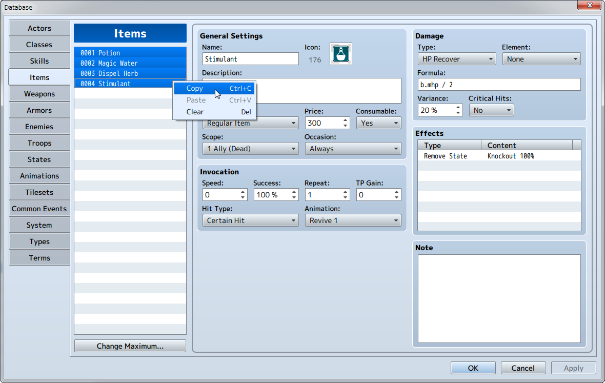
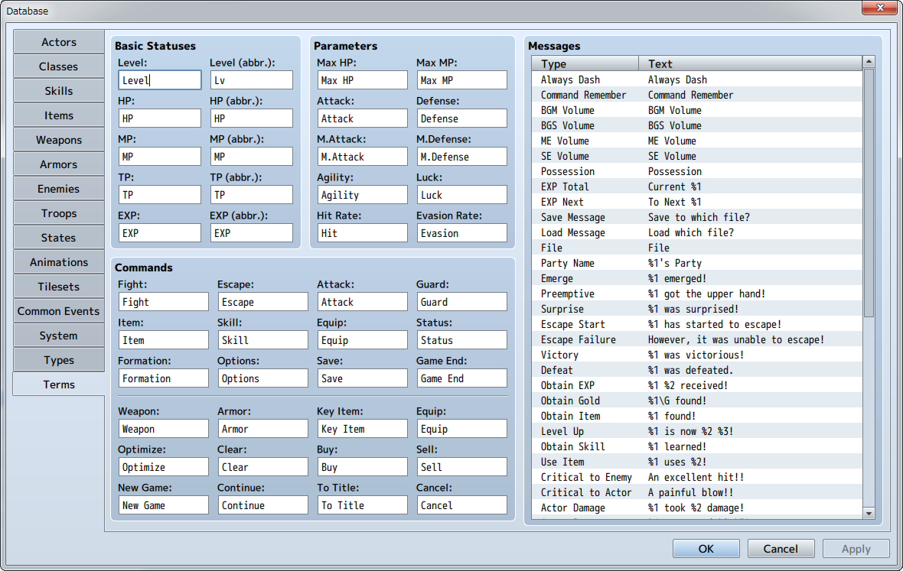
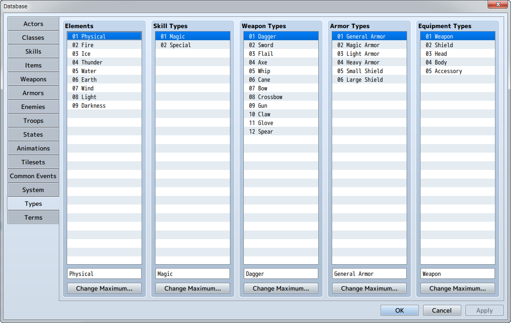

Database
The various data which are available in the game such as characters, items, skills and magic are edited and managed using the database.
Main Features
- Increased Database Volume
- The maximum number of database entries has been changed.
It is now possible to configure up to 2000 skills, items, weapons, armors, enemy characters and enemy groups.
(And a maximum of an additional 1000 entries) - More robust and easy to use features
-
- Now possible to select and copy multiple items using the List Box.

- Messages which were traditionally changed via scripts can now be managed and changed in the [Terms] tab.

- Equipment types (arm equipment, leg equipment, etc.) can be increased and decreased from [Types].

- Commands displayed in the in-game menu can have their visibility managed in the [System] tab.
- [Hidden Items A, B] under [Item Type] are now selectable in the [Items] tab
- Now possible to select and copy multiple items using the List Box.